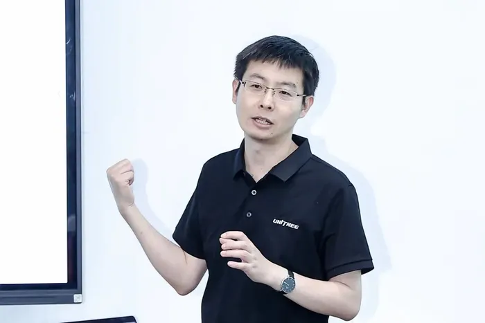
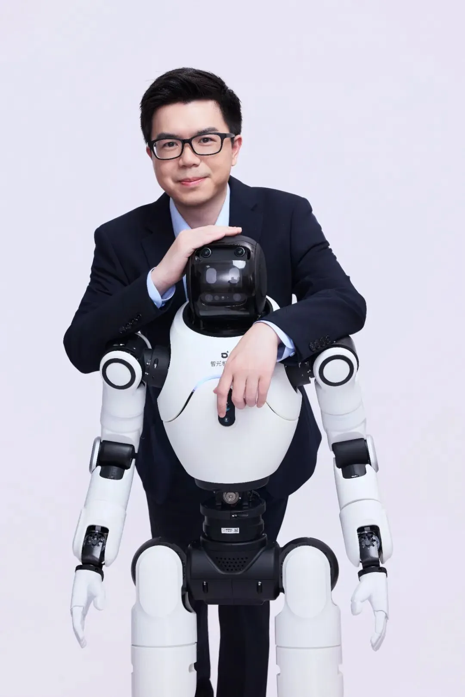
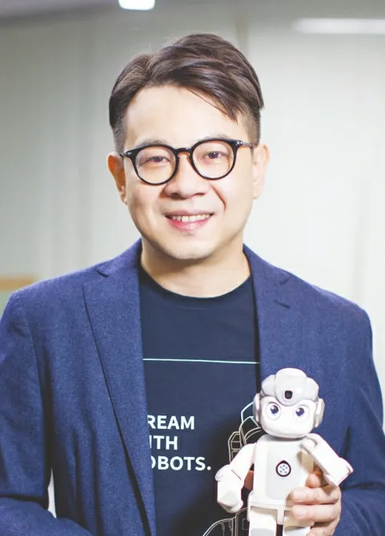
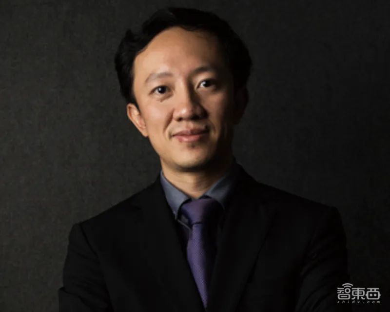
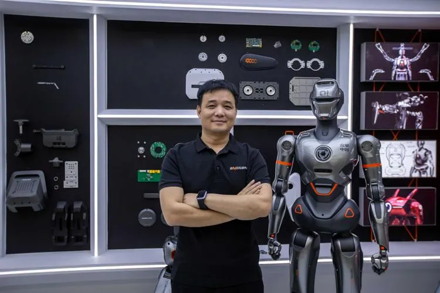
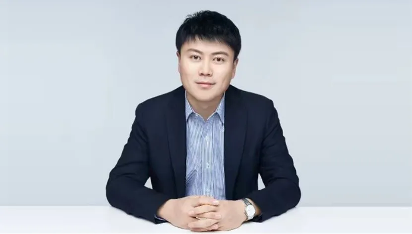

Wang Xingxing
Founder, Unitree Robotics · b. 1990 · 王兴兴
The post-90s founder who turned cost-engineered quadrupeds into the world's best-selling humanoids. Unitree shipped more than 5,500 humanoid robots in 2025 — the global leader — and its G1 became the first mass-produced humanoid to cross 10,000 units. Its H1 sprinted at 10 m/s in 2026. Wang filed Unitree for a Star Market IPO that cleared in a record 73 days.
Read full profile
Fact: 2026 target: 10,000–20,000 humanoid shipments.

Peng Zhihui
Co-founder, Agibot · aka "Wild Iron Man" · 彭志辉 / 稚晖君
The Huawei "genius" who turned a 2-million-yuan salary offer into one of China's hottest robotics startups. Agibot, founded in 2023 with former Huawei VP Deng Taihua, reached a 15-billion-yuan valuation in three years, overtook Unitree in H1 2026 shipments (~8,400 units) and is heading for a Hong Kong IPO. Peng's famous "358 plan": 10 billion yuan revenue by 2027, 100 billion by 2030.
Read full profile
Fact: 10 financing rounds in 3 years; 50+ investors, from Tencent to BYD.

Zhou Jian
Founder, UBTECH · 周剑
The most persistent salesman in humanoids. Zhou sold his house three times and his cars three times to keep UBTECH alive before it became the world's first listed humanoid-robot company (HKEX, December 2023). Its Walker S series now targets 5,000 shipments in 2026 — a bet that factory floors, not living rooms, will pay first.
Read full profile
Fact: "To build a true humanoid robot, I'm willing to bet everything."

Gu Jie
Founder, Fourier Intelligence · 顾捷
Started in rehabilitation robotics before pivoting to humanoids — a detour that gave Fourier unusually disciplined actuator engineering. Its GR-1 (2023) was one of the first mass-produced full-size humanoids, followed by GR-2 and GR-3. Backed by SoftBank Vision Fund 2 and Saudi Aramco's Prosperity7, Fourier has raised roughly US$190 million.
Read full profile
Fact: Open-sourced the Fourier ActionNet dataset for humanoid training.

Zhao Tongyang
Founder, EngineAI · 赵同阳
The man kicked by his own robot. Zhao bet a decade on robotics in 2016, sold his quadruped startup to XPeng in 2020, then restarted from scratch in 2023 with barely a year of living expenses. His new company, EngineAI, hit a 10-billion-yuan valuation and is heading for a Hong Kong IPO. His robot T800 made headlines by kicking him across a showroom.
Read full profile
Fact: "I had enough money for one year of my kid's school fees."

Guo Yandong
Founder, AI²Robotics (Zhipingfang) · 郭彦东
A rare founder with elite research-lab credentials plus hands-on experience in EVs and smart devices. His company pursues end-to-end VLA (vision-language-action) models, and its "Aibo" robot is already working in automotive, semiconductor and biopharma plants. His Dalianite rules: factories first, living rooms later — and never sell robots to homes for profit in the near term.
Read full profile
Fact: Took questions three times at Davos' humanoid panel, 2026.